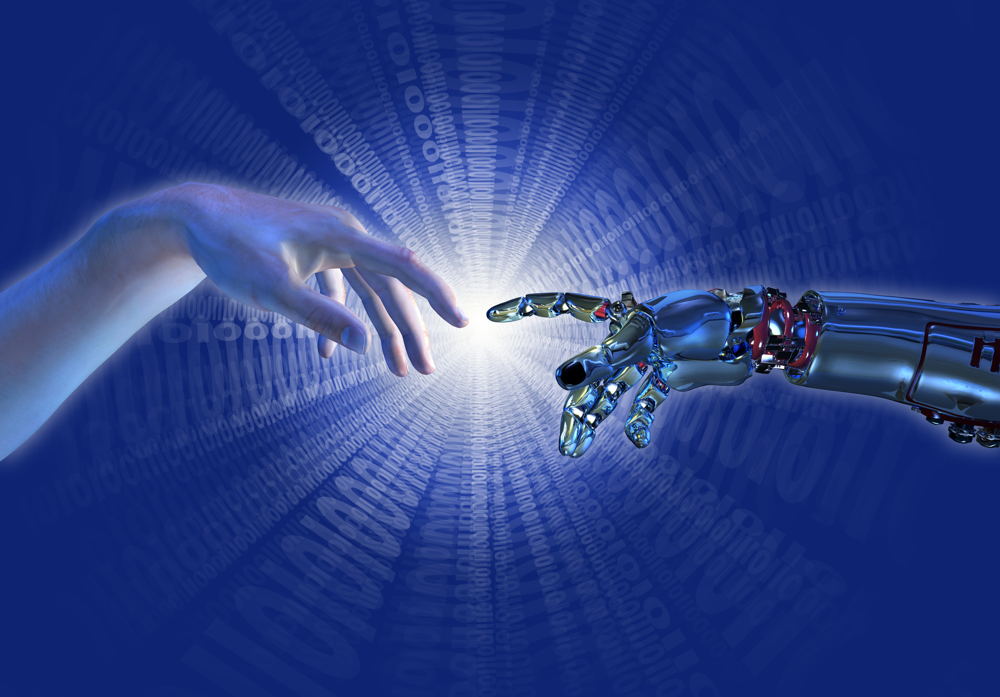

Os primeiros avanços tecnológicos ocorreram na Pré-História, com a descoberta do fogo, a fabricação de ferramentas de pedra e a invenção da roda. Essas inovações foram fundamentais para a sobrevivência e desenvolvimento das primeiras sociedades humanas.
Durante a Antiguidade, civilizações como os egípcios, gregos e romanos desenvolveram tecnologias avançadas para a época. Exemplos incluem a construção de pirâmides, aquedutos, navios e o uso da escrita, que permitiu o registro e a transmissão de conhecimento.
A Idade Média foi marcada por inovações em agricultura, como o arado de ferro e a rotação de culturas, que aumentaram a produtividade agrícola. Além disso, houve avanços na arquitetura, com a construção de catedrais góticas e castelos.

O Renascimento trouxe um renascimento do conhecimento e da inovação, com avanços na arte, ciência e tecnologia. A invenção da imprensa por Johannes Gutenberg no século XV revolucionou a disseminação do conhecimento. A Revolução Científica dos séculos XVI e XVII, com figuras como Copérnico, Galileu e Newton, lançou as bases para a ciência moderna.
A Revolução Industrial, iniciada no século XVIII, marcou uma transformação profunda na produção e na economia. A invenção da máquina a vapor, teares mecânicos e a locomotiva a vapor revolucionaram a manufatura e os transportes. Isso levou à urbanização e ao crescimento econômico acelerado.
O século XX foi um período de avanços tecnológicos rápidos e significativos: Eletricidade e Telecomunicações: A eletricidade tornou-se amplamente disponível, revolucionando indústrias e a vida doméstica. A invenção do telefone, rádio e televisão transformou as comunicações. Automóveis e Aviação: A produção em massa de automóveis e o desenvolvimento da aviação comercial mudaram radicalmente a mobilidade humana. Computação e Internet: A invenção dos computadores e o surgimento da internet no final do século XX iniciaram a Era Digital, transformando a maneira como as pessoas trabalham, se comunicam e acessam informações.
O século XXI continua a ser uma era de avanços tecnológicos impressionantes: Inteligência Artificial e Big Data: Sistemas de IA e análise de grandes volumes de dados estão revolucionando indústrias, desde a saúde até o varejo. Internet das Coisas (IoT): Dispositivos conectados estão criando casas e cidades inteligentes, melhorando a eficiência e a qualidade de vida. Energias Renováveis: Avanços em energia solar, eólica e tecnologias de armazenamento estão promovendo a transição para fontes de energia sustentáveis. Biotecnologia e Saúde Digital: A engenharia genética, telemedicina e dispositivos de monitoramento de saúde estão transformando os cuidados médicos. Exploração Espacial: Novas missões espaciais, incluindo a exploração de Marte e iniciativas de viagens espaciais comerciais, estão ampliando as fronteiras do conhecimento humano.
Para aprender e conhecer mais sobre as tecnologias acesse o site Enciclopédia Significados